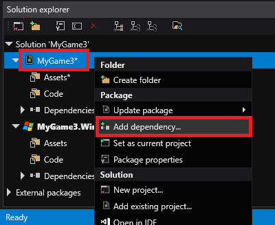
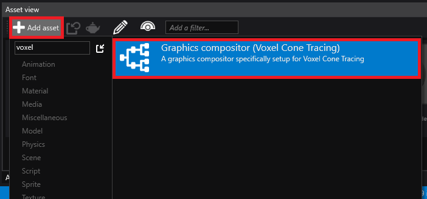
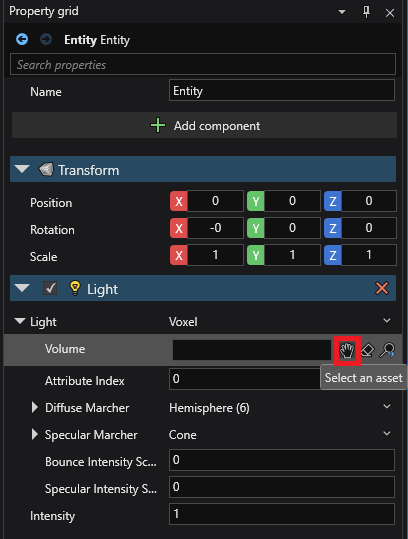

Voxel Cone Tracing Global Illumination
Warning
Приносим свои извинения за неудобства. Для этой страницы нет перевода на русский язык. Она будет отображаться на английском языке.
How to set up an existing project with Voxel Cone Tracing GI
Prerequesites:
VoxelGI requires Graphics Profile Level 11 or Higher (Direct3D 11.0 / OpenGL ES 3.1). This can be set in the Game Settings asset under the Rendering category.
Since Stride is modular, we need to add a reference to the Stride.Voxels plugin:
In the Solution Explorer, right-click on the user project
Select
Add Dependency
Select
Stride.Voxelsin the list and pressOKClose and re-open the project.
Graphics Compositor
Voxel Cone Tracing requires several changes to the graphics compositor.
To make this easier, we prepared a graphics compositor ready to use with Voxel GI in the asset templates:
In the Asset View, click

Start to type
Voxelin the search barSelect
Graphics Compositor (Voxel Cone Tracing)
In your
Game Settingsasset, change the graphics compositor to the newly created one:
Setup scene: Volume and Light
In the scene explorer, above the Entity Tree, click the icon and select
LightsthenVoxel volumeClick the icon again and select
LightsthenVoxel lightAt that point, the scene rendering will likely crash due to the light not being setup correctly (with error
No Voxel Volume Component selected for voxel light.), but that's expected.In the property grid, change the Light Volume to the previously created entity:

At that point, you can click the
Resumebutton in scene renderer, and everything should be setup!
Play with it
To do a quick test, you can disable Skybox light (keep only directional light), go in shadow area and see if some ambient light spread there. You can also play with emissive materials.
Video tutorial
Here's a youtube alternative tutorial made by David Jeske on how to set it up: